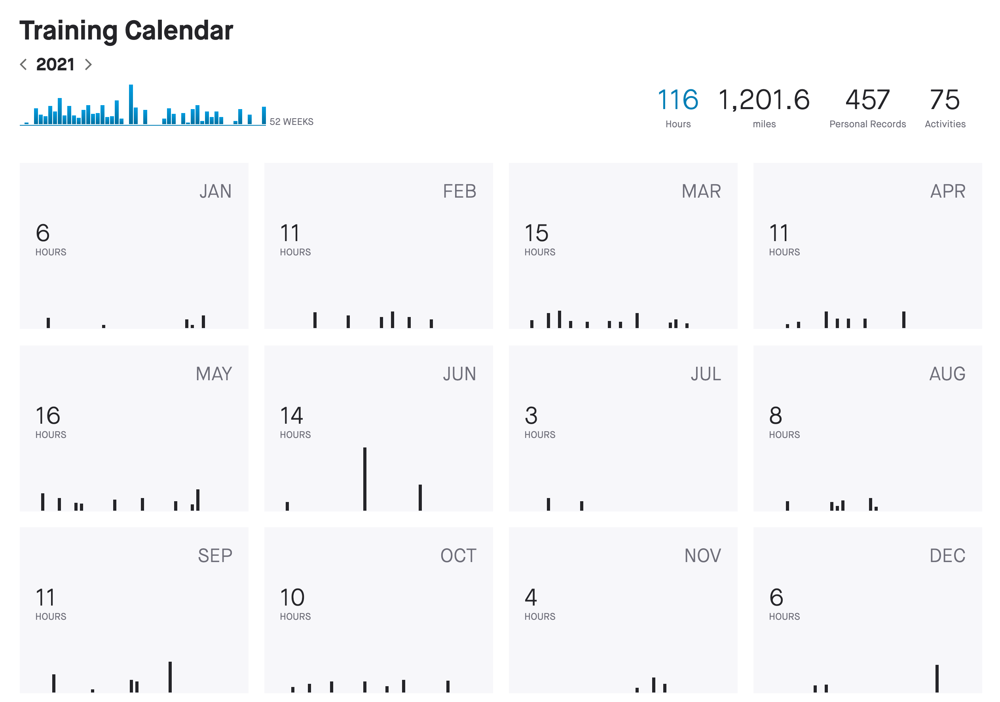
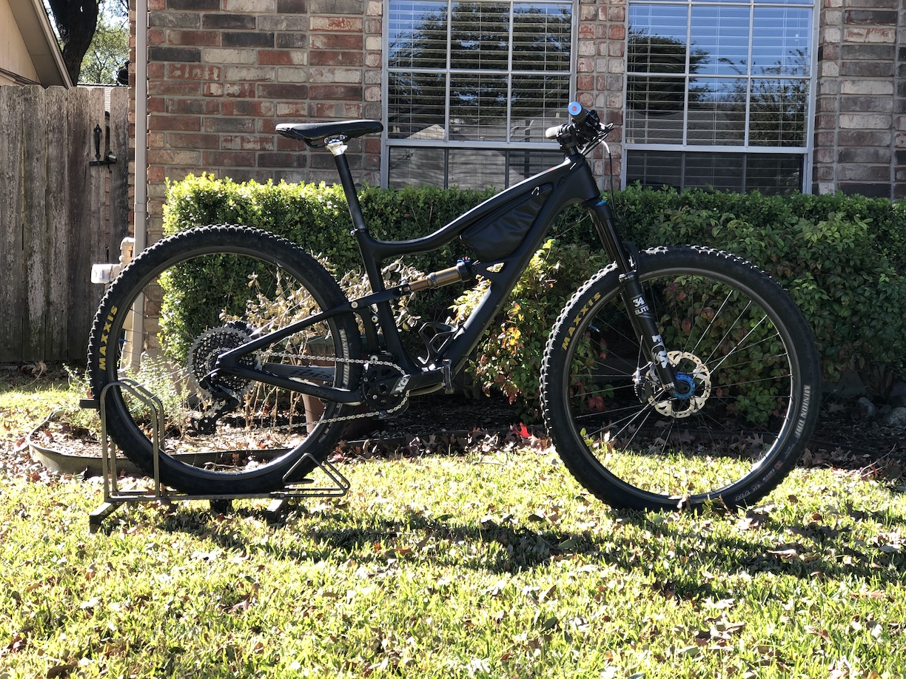
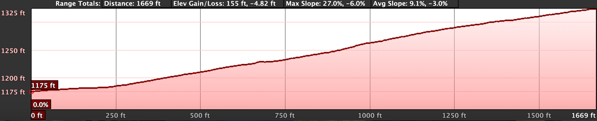
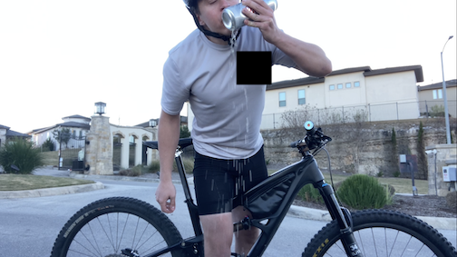
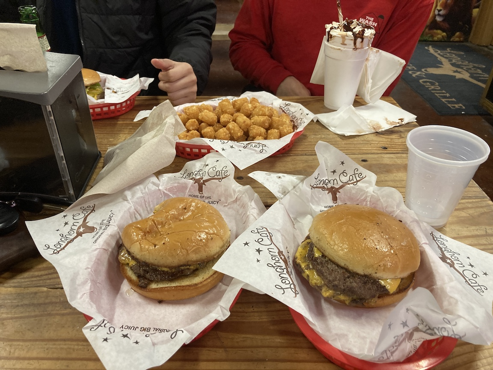

Comprehensive ride report from my successful Everesting Base Camp effort on 16 January 2022.
The official rules are listed here, but can be boiled down to a few basic bullet points:
CEILING(29,032/[elevation gain of hill in feet]) times.
For the Base Camp version, the total elevation gain is half that of Everest, or 4424 m.
My training for this was abysmal. And relative to other cyclists' training for Base Camp/Everesting/10k, it was whatever the superlative of abysmal is. Like really bad.
I first conceived of personally Everesting sometime in late 2020, and based my 2021 training schedule on a late winter attempt. Training started out well. Riding was consistent, I was making obvious progress, and my legs were slowly getting under me. (Side note: my lungs have never been an issue during long efforts. My legs always fail first.)
But at some point in late summer/early fall, I got bored of training on my bikes and training stagnated despite me knowing the attempt was coming up. December rolled around and I was just too busy with life to do a proper attempt.
Outside of actual cycling (which is the best prep one can do for something like this (see SAID principle), don't let anyone say otherwise), my leg work over the past few months has exclusively been rear-foot-elevated split squats and single-leg Romanian deadlifts. Rep ranges for each were 3-5x4-8x100-140 and 3x5-8x100-120, respectively and total weight added.
And that's pretty much it. Happy to provide specific training sessions over the year, just contact me.
My sleep was poor in the days leading up to this. I had to go into work at 4:00am on Thursday and Friday, which messed with my sleep schedule a bit. Saturday I got about 8:00 hours of sleep, and Sunday I got a measly 5:30 hours. Ouch!
I went for an easy 1:00-hour shakeout ride on Saturday and did very little activity the days before. Stress from life/work was low to moderate.
I expected the morning weather to be pretty brutal (temperature of 34 °F / 1 °C and winds of 10 mph / 16 kph). Using the "be bold, go cold" adage I've abided by my entire life, I was rocking:
My favorite shirt, the shorts, and socks stayed on the entire time and were never replaced. They never got uncomfortable.
Food was pretty straightforward and was kindly supplemented mid-ride with some Clif Kids Z Bars. Probably to my detriment, I've never been big into nutrition, especially mid-effort fueling, so there was no strategy behind the following besides "eat before I need to".
My phone battery is notoriously unreliable (or maybe I'm just bad at keeping it charged, but let's go with the former), so I brought enough portable chargers to power my phone until the end of time:
My phone was mounted to my handlebars for easy access/listening and the portable charger that was in use was in the bike's pouch (mounted between the top tube and down tube).
The Ripley's tires were pressurized to 35 psi and suspension locked out, although there was still a bit of sag. I stayed exclusively in the big ring, making my gear ratio 30/52.
I chose the Bella Loma Climb hill. It has a length of 0.33 mi, average grade of 8.6%, and elevation gain of 150 ft/segment. This means I needed to ride (29032/2)/151 = 97 laps (up and down equals one lap) to complete the Base Camp challenge. This would total 64.5 miles of raw distance (32 up, 32 down).
But why this hill? A few reasons.
First, the majority of the hill is a doable grade (provided the biggest cog is big enough). There is really only one difficult part that begins at around the 730 ft mark and ends around 1200 ft. It feels steeper than the rest, despite Google Earth saying otherwise. The remaining parts are just a matter of spinning.
Second, it has a nice view at the top and the side cliffs and trees mostly protect riders from the sun during the day.
Third, it is a decently-trafficked area and I knew that others watching me would provide some motivation (and it did!).
But what's optimal? Heck if I know, but like most things, someone smarter than me did an analysis that can be found here (the uploader disabled embedding the video).
Everybody has a plan until they get punched in the mouth
And boy, did I get punched in the kisser.
Morning of I was up at 3:30am to load the car and get on the road. I got dropped off and began the effort around 4:40am in the dead of morning. Nobody was around: no car headlights, no person-related noises, nothing. It was just me for those early, cold hours. And cold they were.
I grossly underestimated how much the wind would cut through both my shoes and socks. Riding down that goddamn hill at 30+ mph did wonders for making my feet go numb. Going up was actually warm and got me sweating, but the downhill negated all of that.
My first hour went by smoothly, but I knew the full Everesting was out of reach and let my cousin know, too:
This ain't happenin haha
Def underestimated my fitness. Used to do hill repeats in early-mid 2021 but stopped since and just did regular riding, although not nearly as much. Based my expectation on that. Also thin socks are not the move
The devil on my shoulder—a lazy Ethan who knows something probably won't happen and rationalizes quitting because if the full thing isn't completed, it isn't worth doing at all—whispered how nice it would be to just stop, maybe go explore the nice homes and neighborhoods in the area, maybe chow down on those loaded PB&Js. After all, I committed to the full Everesting and that was practically impossible. The angel on my shoulder—an optimistic Ethan who knows that things often get better after being in the saddle for some time—gently encouraged me to make it until the sun was up and shining. I put on some Life Long Tragedy and with it admonished the devil and appeased the angel. The struggle was on and it was real.
I quickly lost count of laps in the teens, causing me to rely on Strava's distance counter and dividing by 0.66 to get my laps. The numbers weren't whole, meaning I was riding in the ±2 lap range of the quotient I got. This caused both happiness and grief in the later stages of the effort.
Around lap 40 I made the resolution to finish, one meant to spite devil Ethan, reward my past self for the months of hard work I had put in, and save my future self from shame and regret. At this time I had also started divvying up repeats into portions of two, three, or four. One was too little off the gargantuan block of 100, while five was too daunting and fatiguing. Three was my Goldilocks number and what I stuck with for a majority of the effort.
Around lap 60 I found my saving grace. Clipless pedals are more efficient because they allow for one leg to pull one pedal while the other pushes. This takes stress off the pushing leg and saves some energy. Or, in my case, a lot of energy (and mental anguish). On the crux of the climb I began to focus on pulling instead of pushing and lemme tell ya, it made all the difference. I continued moving upwards pedal stroke by pedal stroke, except my legs were no longer screaming at me to stop. I just moved.
Despite this newfound "hack", my progress was slowing immensely. I watched my average speed continue to drop (it ended up decreasing by about 0.3 mph from around lap 30 or 40 to 100, which, when taking into account the many hours of work done beforehand, shows a significant speed drop), I took longer breaks, I zig-zagged on the descent instead of beelining it for the next lap.
Eventually lap 80 was surpassed... and lap 90... and finally lap 97. As much as I wanted to stop then and there, I forced myself up another three times to be on the safe side, 'cause I was not about to be one lap short. A 24 oz. Coors Light was delivered and promptly shotgunned in victory.
Here's the full list of artists I listened to, in rough order of amount (first = most listened to):
Life Long Tragedy was a godsend delivered by the same cousin mentioned above a couple of months ago.
Directly after finishing I wasn't nearly as exhausted as I expected to be. Sure, my entire body was sore and I couldn't lift my legs higher than parallel to the ground, but besides that, nothing hurt too much. I started to shiver when I stepped outside, despite it only being 60 °F / 15 °C.
Dinner consisted of two double cheeseburgers from The Longhorn Cafe, which in my humble cheeseburger-connoisseur opinion, are among the best San Antonio has to offer. Highly recommend eating there if you're ever in the area (just let me know so I can be there!).
I got home, crawled into my warm bed with my dog curled up besides me, and quickly drifted off into a restless sleep.
Mindset: Mental toughness again prevails in the face of adversity and doubt. The body is almost always capable, the mind not so much. I've learned this lesson time and time again starting from an early age, yet continue to doubt my ability. I believe this to be a reflex that cannot be entirely eliminated, only turned down. When the going gets tough, everyone has a moment in which they question their preparation and ability. The difference between those that quit and those that finish is a) how long that moment lasts, but primarily b) the decision they make based on that moment. Continuing to question if something can be done only propagates self-doubt and makes finishing less likely; smashing that thought and telling oneself that this is getting done breeds self-confidence and makes finishing inevitable. But the decision is what matters in the end: quit or finish.
Time: Starting early is the way to go. My motivation started out at an all-effort high at 4:40am, waned until sunrise, then followed an arc until the finish. I think having to continue riding in the dark would have killed morale and made it much more difficult. For true Everesting, I may start around the same time, if not earlier, for the same reasons.
Season: I think a cool fall day may be better for my next attempt. Winter was a bit too cold for me. Fall may be a bit warm during the sunny parts, but I'm okay with that.
Support: I'm a bit proud of having done it with no in-person riding support. I called a couple of people while riding, which helped distract me from the pain. I also texted a friend to ask if they'd come out, but quickly called it off. For true Everesting, I think I will need to schedule a few people to come out on different shifts to help get me through it.
Fun: One quote sums this up perfectly:
It doesn't have to be fun to be fun